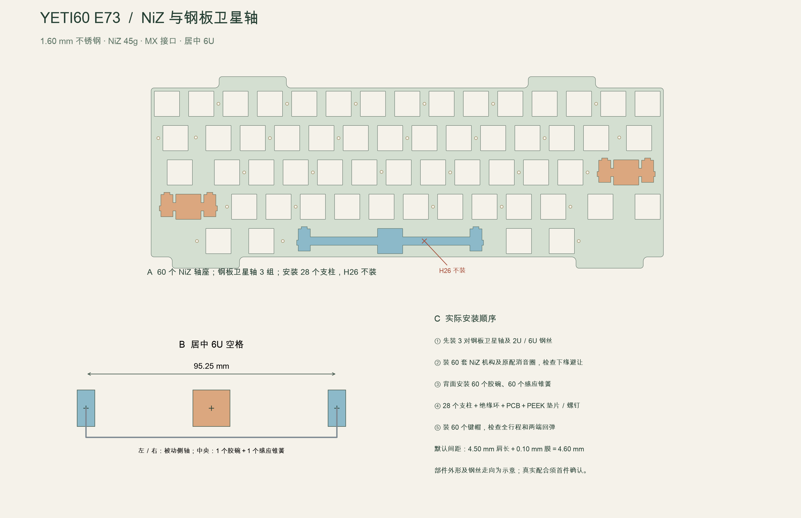
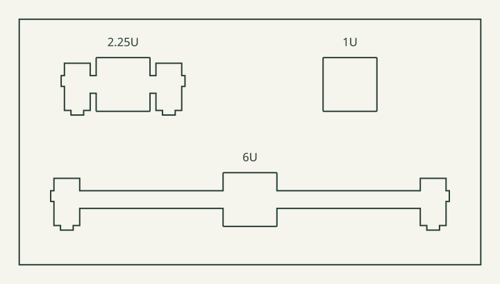

English | 简体中文
当前库存未核实。NiZ 现售 N+ 产品页面不能证明其塑料卡扣高度与早期 EC60 装机相同；批量加工金属件前，先用一个实收轴座及 6U 钢丝试配。
NiZ 轴体与钢板卫星轴方案
E73 当前方案采用 60 套 NiZ 轴座／滑块、NiZ 45g 胶碗及锥形感应弹簧，另配 三组 Cherry／GMK 钢板卫星轴。回车、左 Shift 各用一根 2U 钢丝；居中 HHKB 6U 空格另用一根 6U 钢丝。键帽继续使用 NicePBT BoW。本版不再使用 Deskeys 宽键总成或空格侧轴。
使用新 NiZ 钢板卫星轴定位板和 E73 专用装配规格，原 1.2 mm Deskeys 定位板已被替换。有效感应位置与原 PCB 孔位保留；固件校准指纹现在同时绑定选定定位板／叠层：PCB 仍有 29 个原孔，但 H26 不装，实际只安装 28 套紧固件，因为新空格开孔经过该安装轴。
这是按图设计的工程样机，目前没有实物。真实 NiZ 卡扣、轴座高度、胶碗压缩、钢丝弯形及键帽／卫星轴全行程须先做局部试装；CAD 检查不等于验证了供应商塑料外形或静电容性能。
按这张表购买
库存查询日期：2026-11-02。列出的选项查询时可购买，未进行结账、配送或数量预留。机械件已有库存未核实，不作抵扣。不再同时购买被替换的 Deskeys 整包。
K01、K02 是同一商品页的不同选项，不是整套轴体；胶碗 K03 也须另买，不能以为 K01 已含锥簧和胶碗。无需买完整 MX 轴、PCB 螺丝卫星轴或 PCB 卡扣卫星轴。K04 同页也卖 PCB 版本，必须选 Plate mount。
NiZ 官网 2021 版百只装在本次查询时缺货，因此不作为默认来源；Kebo 的整组钢板 6U 选项也缺货，采用 K04 加单独 K05 的方式，不依赖缺货选项。机器可读选型记录准确选项编号和查询快照。
机械尺寸
| 项目 |
本版要求 |
| 外壳外形 |
FELK60 原尺寸 325.700×125.200×31.190 mm，不缩放 |
| 不锈钢板 |
CAD 包络 1.60 mm；成品实收 1.55—1.60 mm，卡位不得有毛刺或涂层堆积 |
| 普通 NiZ 孔 |
14.00×14.00 mm，内圆角不大于 0.30 mm；须用实收轴座版本先局部试装 |
| 短卫星轴柱距 |
23.80 mm，对应两个 2.25U 键帽，配 2U 钢丝 |
| 空格卫星轴柱距 |
设计基准 95.25 mm，以有效 6U 中央轴对称布置 |
| 固定点 |
实装 28 套；H26 整套不装，支柱、膜、垫片、螺钉都省去 |
| 定位板底／顶面 |
z=4.2062／5.8062 mm |
| PCB 顶／底面 |
z=−0.3938／−2.0000 mm，不变 |
| 定位板到 PCB 间距 |
名义 4.60 mm，4.50 mm 支柱肩＋0.10 mm 聚酰亚胺膜；真实 NiZ 胶碗预压尚待验证 |
| 下侧胶棉原厚 |
2.0 mm，名义安装间距 1.0162 mm |
| 上侧胶棉原厚 |
1.2 mm，名义安装间距 0.5838 mm；不能继续用旧的 2 mm 上侧胶棉 |
Cherry 原厂框架机构图第 3 页给出 1.5±0.1 mm 板厚。这里选的 1.55—1.60 mm 成品范围落在图纸范围内，同时参考 Tako 及 NiZ／EC60 实际装机采用的名义 1.6 mm NiZ 结构。这不代表每一版 NiZ 或 GMK 塑料卡扣已经实测兼容。
DXF 保留外轮廓和全部 60 个感应轴心。原宽静电容轴座改成普通中央轴座，并用三个相连 Cherry 式框架开孔容纳独立卫星轴。6U 开孔穿过 H26，所以 PCB 原孔电气和加工均不改，但该处不装五金。少一个支撑后的局部刚度不能直接视为不变，首件须检查板弯与空格感应稳定性。
仅有“6U”名称不能证明柱距和弯形一致。定制金属件或批量采购前，先将实收 K05、K06 空格帽与六个 K04 柱体按 95.25 mm 设计基准试配。部分定位板生成器使用 95.0 mm，本版没有偷偷改用该值。不能横向硬掰钢丝／键帽，不能拿 6.25U／7U 钢丝替代，也不能认为静电容钢丝和 Cherry 钢丝弯形相同。

矢量图
定位板试装片
先切一块 120 × 64 mm 试片，采用与整块 M01 定位板相同的 304 不锈钢、切割和去毛刺工艺。按毫米、100% 比例加工，要求成品厚度 1.55–1.60 mm。DXF 包含一个外轮廓和三个内开孔，切割时保留所有卡扣缺口及内角。试片 DXF · DXF 回读报告

| 开孔 |
试装材料与检查项 |
| 1U |
一套 K01 轴座、滑块、消音圈和一颗匹配键帽。核对板厚、14.00 × 14.00 mm 开孔及不大于 0.30 mm 的内圆角。装好后卡扣应贴平，向上拉键帽时轴座应保持卡住 |
| 2.25U |
一套 K01 和一对带 2U 钢丝的 K04 卫星轴。用同一个孔分别试装 Enter 和左 Shift 的键帽。M01 上两处开孔平移后重合，卫星轴柱距均为 23.80 mm |
| 6U |
一套 K01、一对改装 K05 独立 6U 钢丝的 K04，以及 K06 的居中 6U 空格键帽。确认钢丝两端弯脚入位，三个键帽插座均可自然落位。两侧卫星轴柱距基准为 95.25 mm |
让试片下方悬空，分别从键帽中央和两端手动压过全行程。未装胶碗时手动抬回。观察钢丝与 NiZ 下裙边的间隙，记录刮擦、卡扣翘起、键帽横向受力及是否需修剪下裙边。记录实测板厚、来料版本、键帽插座间距和钢丝弯脚尺寸。回弹力、整板挠度、胶碗预压及静电容校准使用整张定位板和完整感应堆叠验证。
安装顺序
- 清点七项采购材料，分出六个钢板卫星轴壳、六个柱、两根短丝及一根单独的 6U 长丝。先局部试配空格钢丝、两边柱体和键帽，检查居中、直线度、活动状态及柱距，再装整把。
- 检查新钢板的厚度、卡位、去毛刺和 28 处 M2×0.4 螺纹轴。DXF 圆是加工基准，不能直接当螺丝通孔切割。攻牙和金属碎屑清理须在靠近电子元件之前完成。把 PCB 上 H26 标记为装配不使用，不钻改或填补原孔。
- 按键帽方向装好三组卫星轴壳、柱及钢丝，先把三组卫星轴卡入钢板，再装中央 NiZ 轴座。回车、左 Shift 用两根短丝；第三组将短丝换为 K05 长丝用于空格。检查卡扣平贴、不会向上脱出。
- 试装普通 NiZ 中央轴座；三个大键重点检查下缘及钢丝避让。NiZ／EC60 作者的照片和操作表明，轴座下裙边可能挡住钢板卫星轴。需要修边时，先取下一个备用轴座，只标记卡钩以下真正碰到的薄裙边，用平口剪逐次少量修整。不能剪卡钩、滑块导轨或胶碗承托面，每修一点就重新试装完整行程。若必须剪到承力结构才能避让，应判该样件不合格，不能强装。装回前彻底清除塑屑。
- 装 60 个 NiZ 滑块及其原配消音圈，不叠加 Deskeys #5 圈。装回车、左 Shift 和空格，分别按中间及两端，检查卫星轴不提前顶底、不扭中央滑块、不碰轴座，松手都能回弹。
- 定位板翻面并支承平整，安装 60 个胶碗位置，每个胶碗内居中放一个锥形感应弹簧。胶碗整张按错位配列裁分，不剪坏胶碗裙边／承托面。只有中央静电容轴装胶碗和感应弹簧，六个卫星轴侧柱都是被动机构。
- 安装 28 套黄铜支柱和聚酰亚胺环，H26 留空。装未改动的 PCB，再装 28 个 PEEK 垫片、28 颗 M1.6×5 螺钉。逐步均匀拧紧，同时检查名义 4.6 mm 高度、轴座贴合及松键回弹；不能靠锁螺钉强压高度不匹配的轴座。钢丝不得压胶碗或接触 PCB 铜面。
- 原支承台下侧贴 2.0 mm 胶棉，上侧改贴 1.2 mm。不能通过外壳加高 0.4 mm、下移 PCB、挤压电池或强行合壳来容纳厚钢板。
- 装完整套机构后逐键重新校准；按三个大键时也要检查附近未按键，移动金属、胶碗及结构变化都须实测静电容性能。合壳后复测全部键、完整行程和两端回弹。任何轴座、胶碗、弹簧、消音圈或高度改动，都需要重新校准，即使 PCB／固件指纹未变。
主板焊接、供电及 SWD 按当前 12 步指南，实际接法见当前线束检查。完整合壳装配及固定件仍未完成。机械改版不增加 PCB 订单或电子材料；USB／蓝牙及同时充电策略仍使用匹配的 E73 固件。
验证范围
定位板检查验证外轮廓、60 个感应中心、28 个保留安装轴、H26 冲突、三个卫星轴组合开孔、相邻开孔及最小余料；错误注入测试会移动孔、改孔尺寸、移动卫星轴并重新加回 H26。主装配、电极映射及图像均使用新定位板。
渲染中的 NiZ、卫星轴塑料及钢丝路径是说明性几何，不是供应商认证的三维模型。尚无实物，未证明实际卡扣、手感、局部刚度、USB／蓝牙、充电或干扰验收通过。
制作总入口 · 材料表 · 当前线束
当前 E73 采用右下角模组及 SH3 电池接口；以右下角审查为准。完整线束、电源／电池及实物验收仍未关闭。
正式选用的 M01 定位板及地板修补在规定误差下通过三处定位板／壳体及 SW100 净空检查。定位板外沿内收 0.4 mm，内部开孔保持不变。完整机械公差、供方尺寸及实物验收仍未关闭，局部通过不代表允许加工放行。